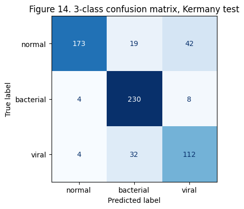
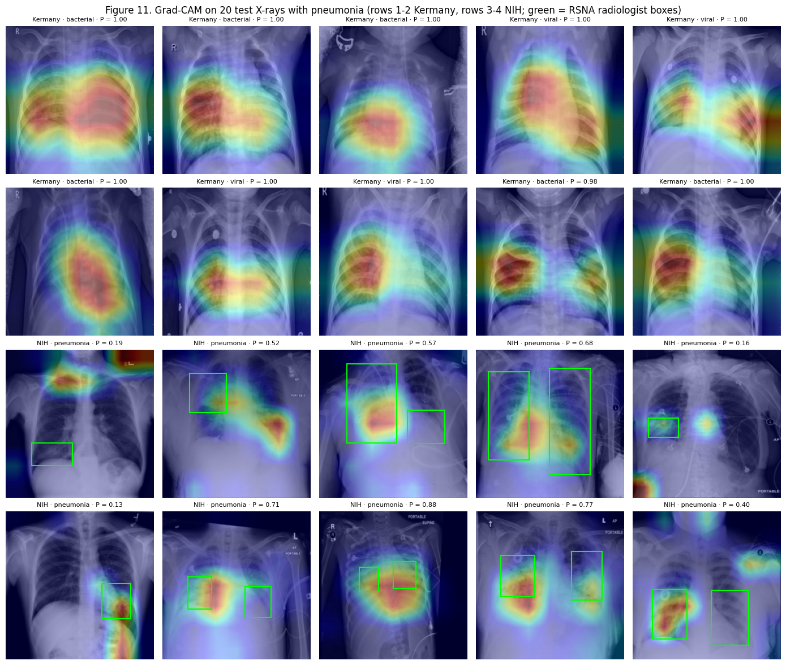

Pneumodetect: Pneumonia Detection From Chest X-Ray Images Using Transfer Learning
Introduction
Pneumonia kills more children under five than any other single infectious disease (World Health Organization [WHO], 2022). A chest radiograph is the routine test to confirm it, but reading radiographs takes training, and in many regions there are too few radiologists to read every image quickly. A fast and reproducible second opinion could help sort images so that the most suspicious ones are reviewed first.
Deep convolutional neural networks (CNNs) have reached expert-level performance on several chest X-ray tasks (Kermany et al., 2018; Rajpurkar et al., 2017), which makes pneumonia detection a realistic course project. It also covers most topics of the Machine Learning Algorithms syllabus: supervised classification, CNNs and transfer learning, regularisation, data augmentation, class imbalance, threshold selection and model evaluation.
The project is a binary classification problem with two extensions. The main research question is: how much does a fine-tuned CNN improve pneumonia detection over classical machine learning models trained on the same data, and how well does it generalise to patients and hospitals it has not seen? The extensions are a three-class model (normal, bacterial or viral pneumonia), Grad-CAM explanations (Selvaraju et al., 2017), and a web application that returns these outputs for an uploaded image. Pneumodetect is a course project, not a medical device, and its output is not a diagnosis.
Literature Review
Kermany et al. (2018) released 5,856 paediatric chest X-rays labelled as normal, bacterial or viral pneumonia and showed that an ImageNet-pretrained Inception network reached about 92.8% accuracy on their test set. Their dataset, distributed on Kaggle by Mooney (2018), became the most common benchmark for student projects. Its official validation folder contains only 16 images, and many published notebooks split it at the image level, so images of the same child can appear in both training and test data and inflate the results.
Wang et al. (2017) published ChestX-ray14, 112,120 frontal X-rays of 30,805 adult patients with 14 labels mined from radiology reports by natural language processing. Rajpurkar et al. (2017) trained a 121-layer DenseNet, CheXNet, on it and reported an ROC-AUC of 0.768 for pneumonia. The report-mined labels are noisy: a visual review of the dataset found that a large share of the labels did not match the images (Oakden-Rayner, 2020). Shih et al. (2019) addressed this for pneumonia: radiologists re-read 26,684 ChestX-ray14 images for the RSNA Pneumonia Detection Challenge and drew bounding boxes around pneumonia-like opacities.
Generalisation across hospitals is a known weakness. Zech et al. (2018) showed that pneumonia models trained at one hospital lost accuracy at another and could learn the hospital or the scanner instead of the disease. Two gaps follow from this work and shape our design. First, most small projects train and test on a single paediatric dataset with leaky splits. Second, results are rarely compared with a classical baseline, so it is unclear what deep learning adds. We therefore split every source by patient, test on two independent sets (adult and paediatric), and compare the CNN with four classical baselines.
Data
Sources
All data are public and were loaded through the Kaggle API and one public HTTPS endpoint, without manual downloads (Table 1). RSNA images are the same files as NIH images, so the RSNA challenge contributes only its radiologist labels, attached to the NIH files through the public RSNA-to-NIH mapping. All 26,684 RSNA labels mapped to exactly one NIH image.
Table 1
Data Sources Used in Pneumodetect
| Source | Patients | Content used | Images used |
|---|---|---|---|
| NIH ChestX-ray14 (Wang et al., 2017) | Adults | Images, NLP labels, official test list | 102,006 |
| RSNA Pneumonia Challenge (Shih et al., 2019) | Adults | Radiologist labels and boxes for 26,684 NIH images | (labels only) |
| Kermany et al. (2018) | Children, 1–5 years | Normal / bacterial / viral X-rays | 5,856 |
Note. After removing four exact duplicates found by image hashing, 107,858 images were used.
Labels
For adult images a radiologist's label was preferred whenever one existed. An RSNA "Lung Opacity" label counts as pneumonia; RSNA "Normal" and "No Lung Opacity / Not Normal" (another disease, pneumonia excluded) count as no pneumonia. For the remaining NIH images an explicit "Pneumonia" finding counts as pneumonia, "No Finding" and other diseases count as no pneumonia, and 10,114 images labelled only "Consolidation" or "Infiltration" were dropped, because these findings look like pneumonia but were never verified. For Kermany images the folder gives normal or pneumonia and the file name gives bacterial or viral.
Splits Without Leakage
The official test sets stay untouched: the patient-wise NIH test list and the 624-image Kermany test folder. A validation set of about 15% was carved from the training pool with stratified group k-fold, where the group is the patient, so one patient never appears in two splits. Kermany normal images have no patient identifier in their file names, so they were split per image; this residual risk is discussed as a limitation. An MD5 hash of every resized image found four exact duplicates between training and evaluation splits, which were removed from the evaluation splits. Table 2 shows the final splits. Pneumonia makes up 9.0% of the training images, so accuracy alone would be misleading.
Table 2
Images per Split and Source After Patient-Level Splitting
| Source | Split | No pneumonia | Pneumonia | Total | % pneumonia |
|---|---|---|---|---|---|
| NIH | Train | 64,943 | 3,258 | 68,201 | 4.8 |
| NIH | Validation | 10,838 | 542 | 11,380 | 4.8 |
| NIH | Test | 19,590 | 2,835 | 22,425 | 12.6 |
| Kermany | Train | 1,156 | 3,319 | 4,475 | 74.2 |
| Kermany | Validation | 193 | 564 | 757 | 74.5 |
| Kermany | Test | 234 | 390 | 624 | 62.5 |
Note. Counts before removing the four duplicates (two from NIH validation, two from NIH test).
Preprocessing
Every image was decoded once, converted to grayscale, resized to 224 × 224 pixels with bilinear interpolation and stored as 8-bit values in a memory-mapped array of about 5.4 GB, so that the GPU does not wait for PNG decoding. The input pipeline repeats the grayscale channel three times, as ImageNet networks expect, and the ImageNet mean subtraction is a layer inside the model. Adult and paediatric images have similar brightness (mean grey level 127.5 and 122.6) but come from different hospitals and age groups, which matters for the results below.
Methodology
Classical Baselines
The baselines answer the question of how much deep learning adds. Two feature sets were used: raw pixels averaged down to 56 × 56, standardised and reduced by principal component analysis to 256 components (97.1% of the variance), and 2,048-dimensional features from an ImageNet ResNet50 with frozen weights. On each feature set we trained logistic regression and a linear support vector machine (SVM) with balanced class weights (Pedregosa et al., 2011), choosing the regularisation strength C on the validation ROC-AUC. Kernel SVMs were not used because their training cost grows quadratically with the number of samples, which is impractical for 72,676 training images. A majority-class classifier shows how misleading accuracy is on imbalanced data.
Convolutional Network
The main model follows the proposal: a ResNet50 backbone (He et al., 2016) with ImageNet weights (Deng et al., 2009), global average pooling, dropout of 0.3 and one sigmoid unit that outputs P(pneumonia). Augmentation runs inside the model and only during training: rotations of up to ±10°, shifts and zoom of up to 10% and brightness changes of up to 10%; vertical flips were excluded because an upside-down chest is unrealistic. Training used two stages. In stage 1 only the new head (2,049 weights) was trained with Adam at a learning rate of 10-3 for up to 3 epochs. In stage 2 the last convolutional block (conv5, 14,955,521 trainable weights, batch normalisation frozen) was unfrozen and trained at 10-5 for up to 7 epochs. The loss was binary cross-entropy with balanced class weights (0.55 for no pneumonia, 5.53 for pneumonia), the batch size was 32, and mixed precision was used on an NVIDIA T4 GPU in TensorFlow (Abadi et al., 2016). Callbacks saved the epoch with the best validation ROC-AUC, stopped training when validation loss had not improved for three epochs, and divided the learning rate by five after two epochs without improvement.
Decision Threshold and Extensions
Because a missed pneumonia costs more than a false alarm, the proposal asks for at least 95% sensitivity. We therefore also report a threshold chosen on validation data: the highest threshold that reaches 95% sensitivity on the validation images of the same source as the test set (0.84 for Kermany). No test image is used to choose it. Predictions between 0.40 and 0.60 are flagged as low confidence. The three-class model starts from the X-ray-adapted backbone of the binary model, replaces the head by a three-way softmax and is trained on the Kermany images in the same two stages. Grad-CAM weights the 7 × 7 × 2,048 feature map of the last block by the gradient of the class logit; using the logit instead of the probability avoids empty maps when the sigmoid is saturated.
Evaluation
Every model was evaluated on three sets: validation, NIH test and Kermany test. The targets of the proposal refer to the Kermany test set. We report accuracy, sensitivity (recall of pneumonia), specificity, precision, F1, ROC-AUC and PR-AUC, confusion matrices and learning curves. Grad-CAM was checked objectively with the pointing game: for 500 NIH test images with an RSNA "Lung Opacity" label we counted how often the hottest point of the map falls inside a radiologist's box and compared this with the share of the image covered by the boxes.
Experiments and Results
Baselines Versus the Fine-Tuned CNN
Table 3 compares all models. The majority-class model reaches 0.874 accuracy on the NIH test set without detecting a single pneumonia, which confirms that accuracy must be read together with sensitivity and specificity. Frozen ResNet50 features beat raw pixels by a clear margin (ROC-AUC 0.916 against 0.836 on Kermany), so ImageNet features transfer to radiographs even without training. Fine-tuning adds a further step: ROC-AUC rises to 0.944 on Kermany and 0.802 on NIH, and at the same 0.5 threshold accuracy rises from 0.740 to 0.812 on Kermany and from 0.671 to 0.801 on NIH. With the validation-tuned threshold the CNN reaches 0.873 accuracy, 0.977 sensitivity and 0.906 F1 on Kermany: it misses 9 of 390 pneumonias and correctly clears 164 of 234 healthy children. Figure 1 shows the ROC curves.
Table 3
Test Results of the Baselines and the Fine-Tuned ResNet50
| Model | Kermany test (624 images) | NIH test (22,423) | |||||
|---|---|---|---|---|---|---|---|
| Acc. | Sens. | Spec. | F1 | AUC | Acc. | AUC | |
| Majority class | 0.375 | 0.000 | 1.000 | 0.000 | 0.500 | 0.874 | 0.500 |
| Pixels + logistic regression | 0.691 | 1.000 | 0.175 | 0.802 | 0.827 | 0.682 | 0.724 |
| Pixels + linear SVM | 0.689 | 1.000 | 0.171 | 0.801 | 0.836 | 0.679 | 0.726 |
| ResNet50 features + logistic regression | 0.740 | 1.000 | 0.308 | 0.828 | 0.916 | 0.671 | 0.783 |
| ResNet50 features + linear SVM | 0.705 | 1.000 | 0.214 | 0.809 | 0.913 | 0.597 | 0.783 |
| Fine-tuned ResNet50, t = 0.5 | 0.812 | 0.997 | 0.504 | 0.869 | 0.944 | 0.801 | 0.802 |
| Fine-tuned ResNet50, validation-tuned t | 0.873 | 0.977 | 0.701 | 0.906 | 0.944 | 0.335 | 0.802 |
Note. Acc. = accuracy; Sens. = sensitivity; Spec. = specificity; AUC = ROC-AUC. Baselines use their default decision boundary. The tuned threshold reaches 95% validation sensitivity (0.84 for Kermany, 0.077 for NIH); on the NIH test set it trades specificity for sensitivity (0.982), so t = 0.5 is the meaningful operating point there.
Figure 1
ROC Curves of the Best Baseline and the Fine-Tuned ResNet50 on Both Test Sets

Training Behaviour
Figure 2 shows the learning curves. In stage 1 the validation loss was lowest after the first epoch, so the new head fitted almost at once. After the backbone block was unfrozen, training loss fell steadily and the validation ROC-AUC rose from 0.917 to a plateau of about 0.935–0.937. Early stopping ended stage 2 after five of the seven allowed epochs and restored the weights of the best epoch, so the training budget was not the limiting factor. Validation loss oscillates between epochs because the validation set contains 4.8% NIH pneumonias and 74.5% Kermany pneumonias and is sensitive to small shifts of the threshold, but there is no sign of severe overfitting. A second independent run of the same notebook gave 0.881 accuracy and 0.950 ROC-AUC on Kermany, so differences of about one percentage point between runs are due to GPU non-determinism.
Figure 2
Learning Curves of the ResNet50 (Stage 1: Head Only; Dashed Line: Start of Fine-Tuning)

Success Criteria
Table 4 checks the quantitative targets of the proposal on the Kermany test set. Six of eleven were met. Sensitivity and F1 exceed their targets, accuracy (0.873) and ROC-AUC (0.944) fall just short, and specificity (0.701) is the clearest miss. The CNN beats the best baseline by 7.2 and 13.1 percentage points of accuracy, but its F1 gain is 4.1 and 3.8 points, below the planned five. The drop from validation to test accuracy (0.090) is within the 10-point bound, and one prediction takes 0.27 s on the GPU and 0.92 s on a CPU.
Table 4
Proposal Success Criteria for the Binary Model (Kermany Test Set)
| Criterion | Target | Result | Met |
|---|---|---|---|
| Test accuracy | ≥ 0.88 | 0.873 | No |
| Sensitivity (recall of pneumonia) | ≥ 0.95 | 0.977 | Yes |
| Specificity | ≥ 0.80 | 0.701 | No |
| F1 | ≥ 0.90 | 0.906 | Yes |
| ROC-AUC | ≥ 0.95 | 0.944 | No |
| Accuracy gain over best baseline, Kermany | ≥ +0.05 | +0.072 | Yes |
| F1 gain over best baseline, Kermany | ≥ +0.05 | +0.041 | No |
| Accuracy gain over best baseline, NIH | ≥ +0.05 | +0.131 | Yes |
| F1 gain over best baseline, NIH | ≥ +0.05 | +0.038 | No |
| Validation-to-test accuracy drop | ≤ 0.10 | 0.090 | Yes |
| Prediction time for one image | < 2 s | 0.27 s | Yes |
Bacterial Versus Viral Pneumonia
The three-class model reached a macro-F1 of 0.812 on the Kermany test set, above the target of 0.75, and a recall of 0.757 for the viral class, above the target of 0.60 (Table 5). Bacterial pneumonia is recognised best (recall 0.950). Most errors are viral cases predicted as bacterial (32 of 148) and normal cases predicted as viral (42 of 234), which is plausible: viral pneumonia often produces diffuse, subtle changes that lie between a normal chest and a lobar bacterial consolidation (Figure 3).
Table 5
Three-Class Model on the Kermany Test Set
| Class | Precision | Recall | F1 | Images |
|---|---|---|---|---|
| Normal | 0.956 | 0.739 | 0.834 | 234 |
| Bacterial | 0.819 | 0.950 | 0.880 | 242 |
| Viral | 0.691 | 0.757 | 0.723 | 148 |
| Macro average | 0.822 | 0.815 | 0.812 | 624 |
Figure 3
Confusion Matrix of the Three-Class Model (Kermany Test Set)

Explanations With Grad-CAM
On 500 NIH test images with radiologist boxes, the peak of the Grad-CAM map fell inside a box in 58.0% of cases and 31.9% of the map's energy lay inside the boxes, while the boxes cover only 12.8% of the image. The model therefore looks at the regions radiologists mark far more often than chance. On paediatric images the maps cover the lung fields (Figure 4). The most confident errors are also informative: for missed adult pneumonias the map often sits on text markers or image corners rather than the lungs, a sign of shortcut learning, whereas for false alarms on healthy children the map lies on the lungs, which points to a domain effect rather than to attention on artefacts.
Figure 4
Grad-CAM on 20 Test X-Rays With Pneumonia (Rows 1–2 Kermany, Rows 3–4 NIH; Green: RSNA Radiologist Boxes)

Application
The two saved models are served by a Gradio web application (Abid et al., 2019) that accepts an X-ray and returns the probability of pneumonia, the likely type, the low-confidence flag and the Grad-CAM overlay in about one second on a CPU. It is deployed at https://keonmei--pneumodetect-web.us-east.modal.run and the code is available at https://github.com/KeonMei/pneumonia-detection-from-chest-x-ray-images.
Discussion and Limitations
The results answer the research question in two parts. Deep learning clearly helps: fine-tuning improves ROC-AUC over the best classical model on both test sets, and every classical model labels most healthy children as ill (specificity 0.17–0.31), while the CNN clears 70% of them. Generalisation, however, is the main limit. Ninety-four percent of the training images are adult NIH images, and the adult and paediatric sources differ in anatomy, hospital and labelling, so the model is least sure exactly where the two domains meet: healthy children. This is the cross-hospital effect described by Zech et al. (2018). The NIH ROC-AUC of 0.802 is above the 0.768 reported for CheXNet (Rajpurkar et al., 2017), although the label definitions differ, and it is limited by label noise in the NLP-mined labels (Oakden-Rayner, 2020).
Other limitations are the per-image split of Kermany normal images, which have no patient identifier; the small Kermany test set, where one image changes accuracy by 0.16 percentage points; training only one backbone; and the computing budget of a free GPU, which ruled out a hyperparameter search. Natural next steps are domain-balanced sampling or a source-specific head, a comparison of backbones such as DenseNet121 or EfficientNet, calibration of the output probabilities, and an external test on another hospital's data.
Conclusion
Pneumodetect combines about 108,000 chest X-rays from three public sources, splits them by patient, and compares four classical baselines with a ResNet50 fine-tuned in two stages. The fine-tuned network detected pneumonia in children with 0.977 sensitivity, 0.906 F1 and 0.944 ROC-AUC and outperformed every baseline on both the paediatric and the adult test set; a second model separated bacterial and viral pneumonia with a macro-F1 of 0.812, and Grad-CAM maps pointed to radiologist-marked regions more than four times as often as chance. Six of eleven targets were met, and the missed ones (specificity and the margin over the baseline on F1) are explained by the gap between adult and paediatric images. In practice such a model could help sort X-rays so that likely pneumonias are reviewed first, with the uncertainty flag and heat map supporting, not replacing, the reader.